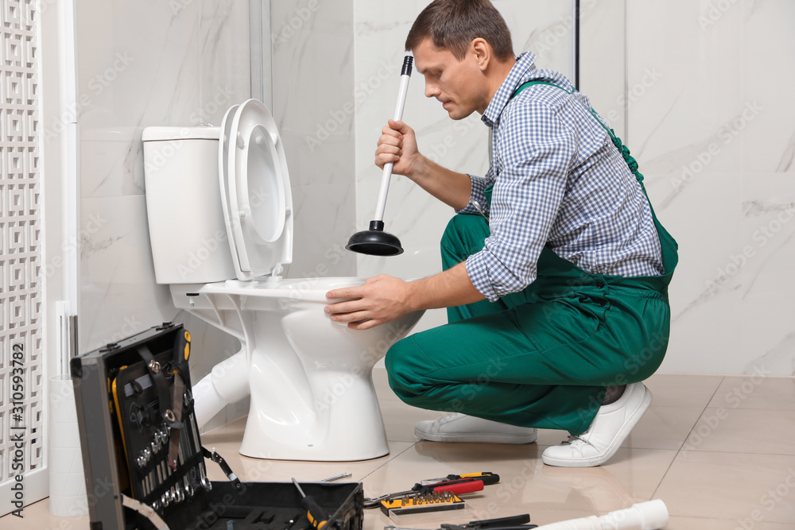

Desatascamos todo tipo de tuberías
En Desatascos Retretes S.A. nos encargamos de desatascar cualquier tipo de tubería que se encuentre obstruida por residuos, raíces, grasa, jabón, cabello o cualquier otro elemento que impida el correcto funcionamiento de la red de saneamiento. Contamos con equipos de alta presión que nos permiten eliminar los atascos de forma rápida y eficaz, sin dañar las tuberías ni el medio ambiente.
